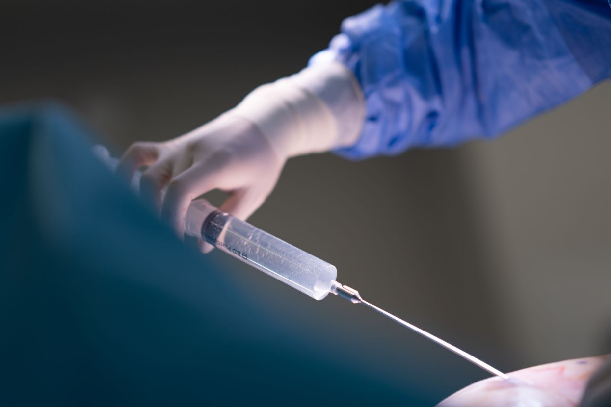

العلاج في تركيا
تحوي تركيا عدداً كبيراً من المشافي والمجمعات الطبيَّة الضخمة، بجانب غناها وتميُّزها بعلاجات طبيَّة دقيقة، سواءً باستخدام الروبوت أو بالآليات الطبيَّة المختلفة، وبتكاليف علاج مقبولة

عمليات شفط الدهون بالليزر في تركيا وتكاليفه

 تعد أشهر علاجات السمنة المفرطة هي شفط الدهون بالليزر. تعرف معنا على فوائد وأضرار شفط الدهون بالليزر وكيف تتم العملية وشاهد الفرق قبل وبعد في تركيا .
تعد أشهر علاجات السمنة المفرطة هي شفط الدهون بالليزر. تعرف معنا على فوائد وأضرار شفط الدهون بالليزر وكيف تتم العملية وشاهد الفرق قبل وبعد في تركيا .
جدول المحتويات
ما هو شفط الدهون بالليزر ؟
يُستخدم فيها الليزر لإذابة الدهون المتراكمة تحت الجلد عبر طاقة حرارية مركزة ، بهدف تسهيل شفطها بعد ذلك ، وهو إجراء تجميلي، وايضا يدعى إذابة الدهون بالليزر ، وتجرى العملية تحت التخدير الموضعي ، لا حاجة للتخدير العام.فوائد وأضرار شفط الدهون بالليزر
- إجراء جراحي مصغر:
شفط الدهون بالليزر هو عمل جراحي أقل بكثير من شفط الدهون التقليدي ، يتضمن إجراء شفط الدهون التقليدي أنابيب كبيرة تهدف إلى سحب الدهون وإزالتها من مناطق مختلفة من الجسم عبر الضغط، بينما بإستخدام الليزر يتطلب فقط شق صغير لوصول الليزر للمنطقة الدهنية. - سرعة علاج والتعافي:
نظرا للتدخل الجراحي الدقيق عبر الليزر سيتم التعافي بشكل أسرع مقارنة بالعمليات الأخرى، بالإضافة يمكن إجراء العملية بشكل أسرع ، حيث تستغرق العملية ساعة إلى ساعتين ومع الحد الأدنى من الألم.
- مظهر منحوت بشكل أكبر:
في العمليات التقليدية سيعاني المريض من الترهلات الجلدية بعد شفط الدهون ، بينما في شفط الدهون عبر الليزر سيكون جلد المريض أكثر تماسكا و تناسقا.
التأثيرات الجانبية والمخاطر المرافقة لعملية شفط الدهون بالليزر يتضمن ألم أو تخدر في المنطقة المعالجة، عدم راحة أو تلون الجلد ، وبعض الأشخاص يعانون من حرقة تحت الجلد بعد جلسة العملية ، و إن إستمر مدة تزيد عن عدة أيام فقد يكون علامة على حدوث تراكم للسوائل ، و يمكن معالجتها من قبل الطبيب.
في حالات نادرة يعاني بعض المرضى من :
- ندب تحت الجلد
- إنتان في مكان العلاج
- تخثر الدم
- نخر الجلد (موت الأنسجة) في موقع الشق.
شروط عملية شفط الدهون بالليزر
تعتبر العملية إجراء آمن لمعظم الناس ، وإن كنتم تبحثون عن طريقة للتخلص من الدهون الزائدة فأنتم من المرشحين المناسبين ، لكن الأشخاص الذين يعانون من حالات خاصة ليسوا مناسبين لعملية شفط الدهون بالليزر ، هذه الحالات تتضمن أي مرض حاد ، أمراض إنتانية ، مرض القلب ، الحمل ، والورم الخبيث.
في علاجك الطبية نقدم المشورة الطبية الصحيحة بعد أخذ كامل البيانات والتاريخ الطبي قبل المباشرة بالعملية، كما هو الحال مع أي عملية جراحية أخرى.
كيفية شفط الدهون بالليزر
يتطلب هذا الإجراء استخدام ليزر قوي لتكسير الدهون ، وهو إجراء أقل توغلًا و نزف أقل من طريقة شفط الدهون التقليدية، حيث يتم إدخال أنبوب صغير من خلال شق صغير لتوصيل طاقة الليزر والحرارة إلى طبقة الدهون الموجودة تحت الجلد ، ومن ثم شفطها بواسطة تقنية مخصصة ، بعد العملية قد يترك الجراح الشقوق مفتوحة بحيث يمكن تصريف السوائل الزائدة والدم من الجسم.
عملية شفط الدهون بالليزر للافخاذ
شفط الدهون للأفخاذ من العمليات الأكثر طلبا للنساء مما يعطي من قوام وتناسق للجسم، بالإضافة للتغيرات الشكلية الناتجة عن الترسبات الدهنية الموضعية أو المنتشرة في الفخذ ، فإن جلد الفخذ الأنثوي عرضة للتغييرات الناتجة عن السيوليت وضعف لون البشرة ، مما يضعف درجة التحسن من عمليات شفط الدهون التقليدية، ويلعب الشكل الناتج عن عملية شفط الدهون بالليزر للافخاذ دور كبير في إعطاء الثقة النفسية وإبعاد الحرج عن الوزن الناتج للشخص المعالج.
عملية شفط الدهون بالليزر للارداف
تستخدم عملية شفط الدهون بالليزر للأرداف للتخلص من الدهون التي فشلت التمارين الرياضية والحميات في إزالتها ، و تساعد بإعادة تنسيق الجسم وبالتالي تعد عملية تجميل وليس إنقاص الوزن، بالإضافة تساعد في إعطاء الثقة والرضى للذين يعانون من الحرج من تراكم الدهون في الأرداف.
عملية شفط الدهون بالليزر بالفيديو
عمليات شفط الدهون بالليزر قبل وبعد
نتائج عمليات المعدة قبل وبعد في تركيا قبل
قبل
 بعد
بعد
 قبل
قبل
 بعد
بعد
 قبل
قبل
 بعد
بعد
 قبل
قبل
 بعد
بعد
الفرق بين شفط الدهون بالليزر والشفط العادي
- شفط الدهون بالليزر تستخدم للتغلب على المضاعفات الناتجة عن العمليات التقليدية لشفط الدهون مثل الإختلالات الجلدية أو ترهل الجلد .
- في عملية شفط الدهون التقليدية يكون هناك ضرر و نزيف أكثر بإعتبار الترسبات الدهنية تعالج عبر القُنَيَّة .
- عملية الليزر تخثر الأوعية الدموية الصغيرة (تقلل النزف والكدمات) مما يسبب ضرر ميكانيكي أقل.
- الميزة الرئيسية لعملية شفط الدهون بالليزر عن العملية التقليدية هو أنها تنطوي على تعافي أسرع بكثير وتسبب ألم بشكل أقل بسبب حدوث الإلتهاب فيها بشكل أقل.
- الشد السريع للجلد الناتج عن عملية شفط الدهون بالليزر يسهل العلاج للمناطق الصعبة الوصول في شفط الدهون العادي (والذي يؤدي بالعادة إلى إستجابة ضعفية في الإنكماش أو حدوث إختلال في مابعد شفط الدهون).
- السمة الرئيسية في شفط الدهون بالليزر هو الرضى لدى المرضى و الأطباء.
- شفط الدهون بالليزر ايضا مناسب لمعظم المناطق التقليدية إعادة التنسيق لها مثل: الغضاريف . المنطقة البطنية و الجوانب
الفرق بين شفط الدهون بالليزر والفيزر
- شفط الدهون VASER هو إجراء يستخدم الطاقة بالموجات فوق الصوتية لإزالة الخلايا الدهنية من أجزاء معينة من الجسم ، حيث يتم إستخدام عملية مزج للمساعدة في إزالة الخلايا الدهنية من الجسم ، والذي يعني تحويل الخلايا الدهنية إلى سائل ومن ثم إزالتها ، مما يزيد من درجة الأمان للأنسجة المحيطة.
- بينما الليزر يستخدم طاقة حرارية مركزة لتدمير الخلايا الدهنية في الجسم ، رغم أن الليزر يتم تركيزه على نقطة واحدة لكن يوجد مخاطر و إحتمالية في حرق الأنسجة الحيوية المحيطة والتسبب بالضرر لها، بينما بالفيزر تنتشر الطاقة على المنطقة المستهدفة بدل تركيز طاقة عالية على نقطة واحدة ، هذا يسمح للفيزر بشفط الخلايا الدهنية بشكل أكثر فاعلية من الليزر ويسمح للجراح بإزالة خلايا دهنية أكثر من شفط الدهون بالليزر.
- الإختلاف ايضاً هو أن الطاقة الصادرة بالفيزر تتحول إلى طاقة إهتزازية ، والتي تجعل الخلايا الدهنية تهتز مما يسبب بإنفصالها وإختلاطها بالسائل الذي تم حقنه قبل الجراحة بعملية تدعى المزج ، الطاقة الإهتزازية لشفط الدهون بالفيزر تستهدف الخلايا الدهنية فقط ، لذا تزال فقط الخلايا الدهنية خلال العملية مما يعني أن الأوعية الدموية والأعصاب والأنسجة الضامة لا تتأثر خلال العملية ، هناك إحتمالية حرق أقل للجلد عبر شفط الدهون بالفيزر.
- الفرق الآخر بين العمليتين هو أن شفط الدهون بالفيزر يسمح بإعادة إستخدام للخلايا الدهنية المزالة من الجسم في أماكن أخرى من الجسم ، الخلايا الدهنية المزالة بشفط الدهون بالليزر لا يمكن إعادة إستخدامها بسبب تدمرها من الحرارة الصادرة من الليزر ، ايضا الفيزر أفضل بشد الجلد بسبب توحد الحرارة المرسلة .
نتائج شفط الدهون بالليزر في تركيا
لا تقاس نتائج شفط الدهون بالليزر بعدد الكيلوغرامات التي تم خسارتها إنما بمدى رضى المريض عن الشكل الجديد للجسم ، إذ تعد هذه العملية تجميلية و ليس لتخفيض الوزن ، ويقوم جراح التجميل أو طبيب الأمراض الجلدية بإجراء العملية للمناطق المرغوب بتحسين شكلها لوحدها أو مع جراحات التجميل الأخرى كشد الوجه والبطن ، وتعد تركيا رائدة في المجال الطبي بعدد هائل من العمليات والأطباء والخبرات ، مما يجعلها مركزا رئيسيا للراغببين بهذا النوع من العمليات ومع إنخفاض التكلفة مقارنة بالدول الأوربية والأمريكية وبأحدث التقنيات والجودة العالية.
تلبي علاجك الطبية تطلعاتكم عبر العمل مع فريق من المختصين والخبراء لضمان حصولكم على تجربة جميلة ونتائج مرضية.

تكاليف عمليات شفط الدهون بالليزر في تركيا
تبدأ تكاليف عمليات شفط الدهون بالليزر في تركيا من مبلغ 1800 دولار أمريكي ، وتختلف التكلفة حسب التقنية المستعملة ، المنطقة المستهدفة ، وكمية الدهون التي يجب إزالتها ، بالإضافة للعمر ، الصحة العامة ، والبرامج المرافقة.
وتوفر علاجك الطبية كافة البرامج التي ترغبون بها و من بينها المنتجعات الإستشفائية المخصصة لما بعد العمليات الجراحية.
أسئلة شائعة حول شفط الدهون بالليزر
يمكن إن يسبب أذى لبعض الأنسجة المحيطية بسبب التركيز العالي للطاقة الحرارية على نقطة واحدة ، لكن بشكل عام أكثر أمانا من الطرق التقليدية لأنه يتم بإجراء جراحي دقيق.
نسبة النجاح مرتفعة خاصة إن تم إجرائها بمراكز طبية ذات خبرة طويلة مثل الخبرة التي يتمتع فيها علاجك الطبية.
تتميز عملية شفط الدهون بالليزر كونها تسبب ألم أقل بكثير من العمليات التقليدية.
لا يمكن شفط الدهون بالليزر للحامل ، لما فيه خطر على صحة الجنين والمرأة ، ويمكن إجرائها بعد الولادة.
قد ينخفض الوزن 4 إلى 7 كغ ، لكن عملية شفط الدهون بالليزر هي عملية تجميلية وليست مخصصة لخسارة الوزن ، ومع ذلك يتعلق مقدار الإنخفاض بالوزن بكمية الخلايا الدهنية المرغوب بإزالتها والمنطقة المستهدفة.
لا يمكن إعادة حقن الدهون مرة أخرى بسبب كون الخلايا الدهنية قد تدمرت خلال العملية وذلك بسبب الطاقة الحرارية العالية الصادرة من الليزر.
لا ، هي عملية آمنة إن أجريت بيد الأطباء أصحاب الخبرة ، لكن مثل كل عملية جراحية قد تحصل مضاعفات في حالات نادرة.
تحرير: علاجك الطبية©


المصادر:
American Society of Cosmetic Physicians
اطلع على أحدث المنشورات والأخبار الطبية
عمليات شفط الدهون بالفيزر في تركيا والأسعار 2021
يعتبر شفط الدهون بالفيزر من أفضل عمليات علاج السمنة المفرطة. تعرف معنا على مميزات وعيوب شفط الدهون بالفيزر وكيف تتم العملية وشاهد الفرق قبل وبعد في تركيا.
طرق علاج طول النظر في تركيا وأحدث التقنيات
يعاني الكثير من كبار السن وحتى البالغين من مرض طول النظر . سنتحدث في هذا المقال عن كيفية علاج طول النظر وأسباب هذا المرض ونسبة نجاح العلاج .
الفرق بين زراعة الشعر في ايران وتركيا 2021
بالرغم من أن أسعار زراعة الشعر بين تركيا وايران لا تختلف كثيرا إلا أن هنالك الكثير من الفروق التي قد تحدد لك الدولة الأفضل لزراعة الشعر فيها.
طرق علاج قصر النظر في تركيا وأحدث التقنيات
يعاني الكثير من الأطفال وحتى البالغين من مرض قصر النظر. سنتعرف في هذا المقال على أفضل طرق علاج قصر النظر وأسباب هذا المرض ونسبة نجاح العلاج .